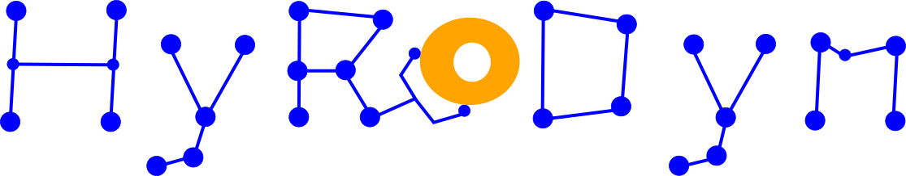
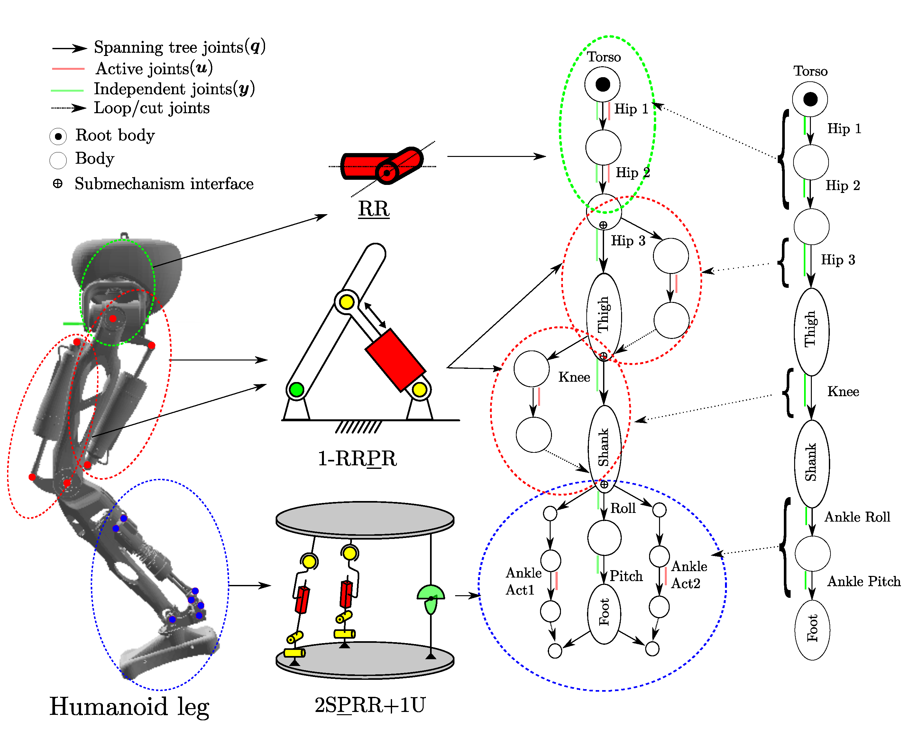
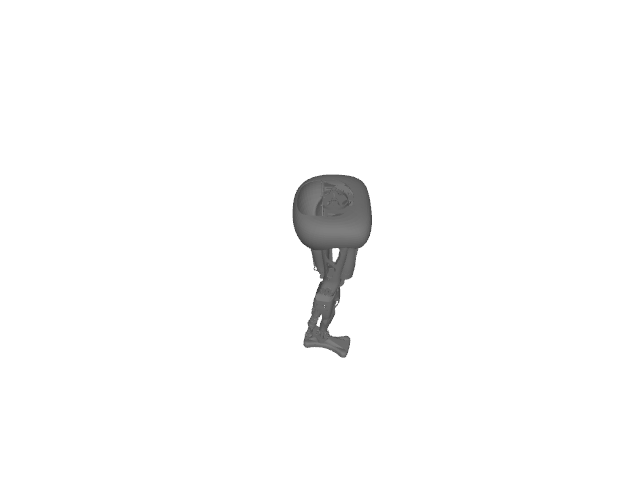

✳️ Overview
Hybrid Robot Dynamics (HyRoDyn) is a kinematics and dynamics solver for series-parallel hybrid robots. It exploits the modularity in robot design and can help you solve kinematics and dynamics of such systems analytically.



✨ Features
- Analytical kinematics and dynamics for hybrid robots
- Support for series–parallel mechanisms
- Modular robot architecture representation
- Efficient rigid-body dynamics computation
- C++ core with optional Python bindings
- Compatible with URDF robot descriptions
📦 Requirements
C++ Build
- CMake ≥ 3.10
- C++17 compatible compiler
- Eigen3
- yaml-cpp
- Boost (all components)
- TinyXML
- GoogleTest (for unit tests)
Python Bindings (Optional)
- Python ≥ 3.8
- pybind11
- Python development headers
🔧 Build Instructions
Linux
1. Update System
2. Install Required System Dependencies
Optional (recommended for advanced CMake configuration):
Optional: install clang
3. Install Python Dependencies (Optional – for Python bindings)
🔧 Build HyRoDyn
1. Clone the Repository
If already cloned without --recursive:
2. Compile
3. Build with Python Bindings
To build HyRoDyn with Python bindings, please follow the instructions in the Python bindings section.
🚀 Usage & Examples
Note: HyRoDyn requires both a URDF file and a submechanisms YAML file to define the modular robot structure. Example files for the provided robots are in robot/<robot_name>/urdf/ (e.g. robot/leg/urdf/).
Quick start (C++)
See src/Main.cpp for a runnable example.
Quick start (Python)
Detailed tutorials
Step-by-step tutorials for C++ and Python (forward/inverse kinematics, inverse dynamics, mass-inertia matrix, CoM) are in docs/tutorials.md.
For the full Python tutorial script run:
See python/README.md for Python bindings setup.
📁 Folder Structure
- addons/: Contains an internal URDF parser used to construct modular robot models.
- bin/: Utility scripts used to generate custom submechanism libraries.
- external/: Third-party libraries used by HyRoDyn. Currently includes RBDL, which provides the rigid-body dynamics primitives.
- python/: Optional Python bindings implemented using pybind11.
- robot/: Example robots including:
- URDF robot descriptions
- YAML files defining submechanisms
- src/: Main source code implementing HyRoDyn algorithms for solving the kinematics and dynamics of hybrid robots, including handling closed-loop mechanisms analytically or numerically.
- docs/: Documentation generated using Doxygen. The configuration file (Doxyfile) is provided to generate the API documentation for the project.
🧪 Testing
HyRoDyn uses GoogleTest. Tests live in test/test_hyrodyn.cpp.
Run all tests
Or run the binary directly from the repository root (required so that robot file paths resolve correctly):
Add a new test
- Open test/test_hyrodyn.cpp.
- Add a TEST(Hyrodyn, MyNewTest) block using GoogleTest's ASSERT_* / EXPECT_* macros.
- Rebuild and rerun: make -j -C build && ctest --output-on-failure -C build.
See CONTRIBUTING.md for the full test contribution guidelines.
📖 API Documentation
API documentation is generated from the header files using Doxygen.
HTML output is written to docs/html/. Open docs/html/index.html in a browser.
The main public API is documented in:
- src/HyRoDyn.hpp — low-level functional API (all algorithms).
- src/robot_model_hyrodyn.hpp — high-level RobotModel_HyRoDyn class.
📜 License
HyRoDyn is distributed under the 3-clause BSD license. See the [LICENSE](LICENSE) file for more details.
📚 Citation
If you use analytical approach from HyRoDyn in research, please cite:
If you use numerical approach from hyrodyn, please cite:
🎉 Acknowledgements
This project would not be possible without the contributions of the following repositories:
- urdfreader: Internal URDF parser used to construct robot models.
- rbdl: provides rigid-body dynamics primitives.
📧 Contact Information:
For further questions or collaboration inquiries, please contact the developers at:
Copyright 2026, DFKI GmbH / Robotics Innovation Center
Generated by